Gym Tonic Wellness Club
gymtonicwellnessclub.it
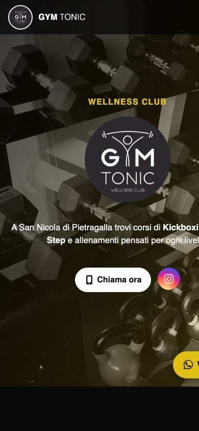
Websites for SMEs with practical SEO foundations, fast user journeys, and measurable visibility.
We build and support websites that are easy to crawl, clear to navigate, and aligned with real search intent. Beyond delivery, we run ongoing SEO optimization cycles using Search Console, analytics, technical audits, and on-page content tuning to grow qualified traffic over time.
Selected projects currently in our portfolio.

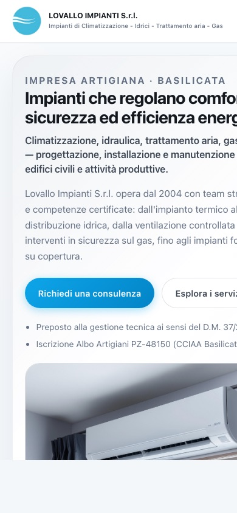
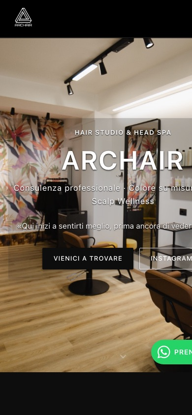
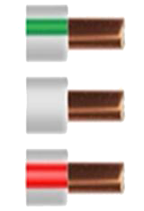
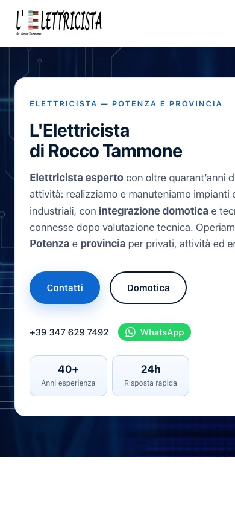
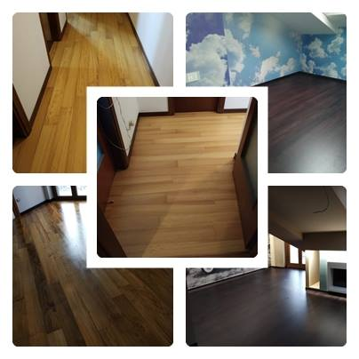
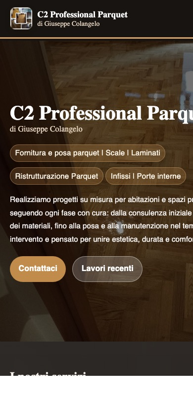
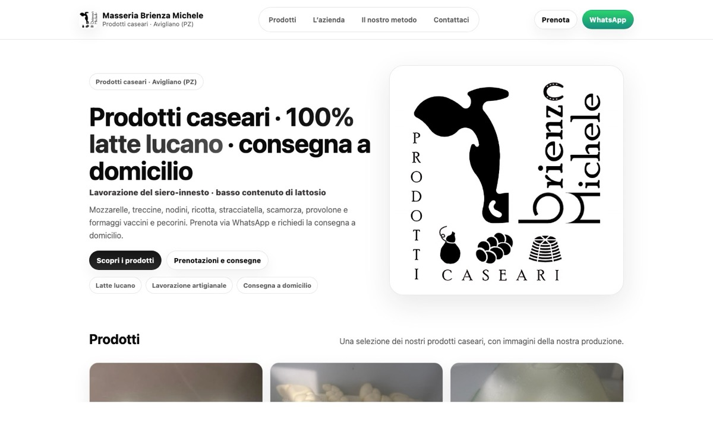
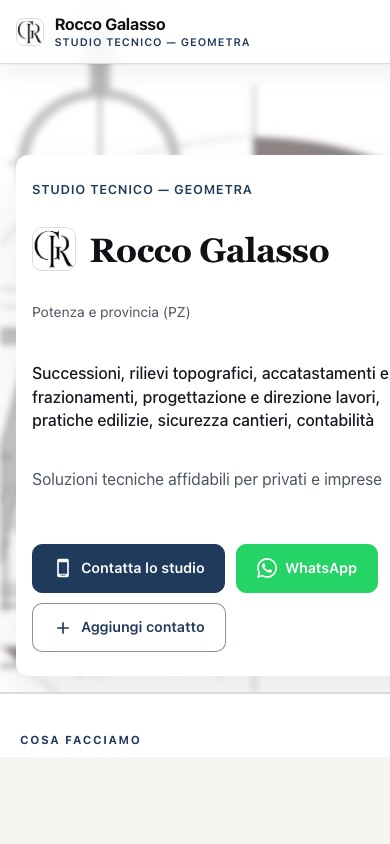
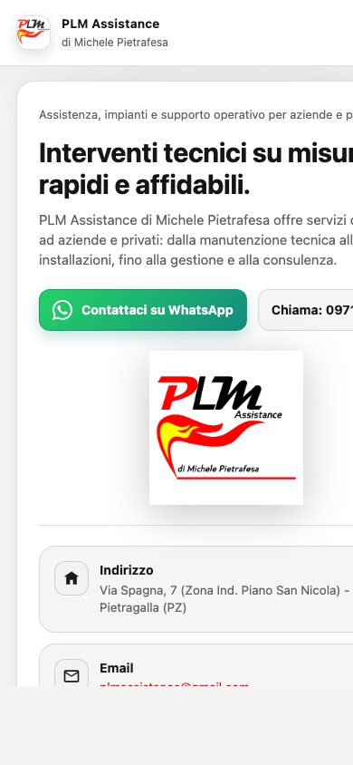
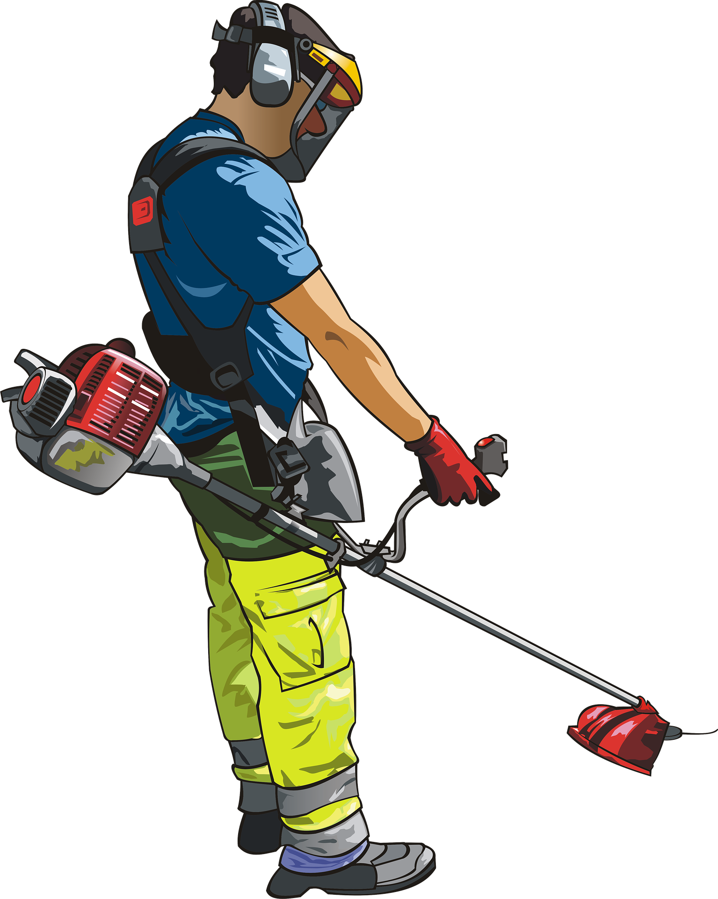
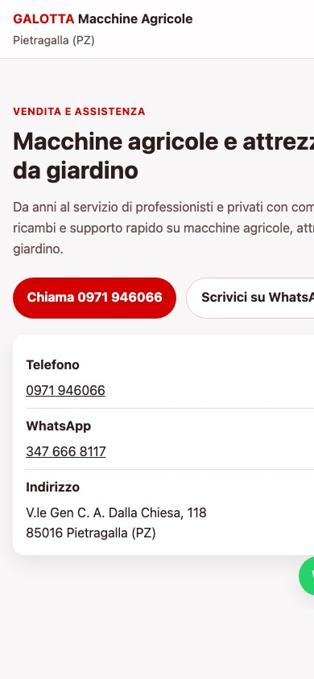

Search intent mapping starts by separating what users want to do: learn, compare, evaluate a provider, or contact immediately. For SME websites, this distinction helps avoid pages that mix too many goals and fail to rank for any specific query cluster.
A practical structure is to map transactional intent to service pages, local intent to area-specific landing pages, and informational intent to FAQ blocks or standalone guides. This gives each page a clear role in the funnel while improving topical relevance.
Once mapped, keep internal links aligned with intent transitions: informational content should lead to service pages, and service pages should answer decision-stage questions with proof, trust signals, and clear calls to action.

A reliable technical baseline begins with crawlability and index hygiene. Make sure key pages are accessible to bots, canonicalized correctly, and reflected in a clean XML sitemap without thin, duplicate, or noindex URLs.
Define canonical tags consistently, avoid mixed indexing directives, and maintain a strict robots policy that blocks low-value sections while keeping strategic content fully discoverable. This prevents index bloat and focuses crawl budget where it matters.
Review Search Console coverage monthly to catch soft-404s, redirect chains, and canonical mismatches early. Technical SEO is less about one-time setup and more about maintaining quality as the site evolves.
On-page optimization for CTR combines relevance and clarity. Titles should include the primary intent phrase early, while meta descriptions should communicate concrete value, trust cues, and an action-oriented reason to click.
Heading structures must support scannability and semantic clarity. Keep one clear H1, use H2/H3 to cover sub-intents, and reduce ambiguity in section labels so both users and search engines understand page scope instantly.
Track CTR per query group in Search Console, then iterate on underperforming pages with focused title and snippet rewrites. Small copy changes at scale often produce meaningful gains without rebuilding entire pages.

Local SEO performance depends on consistency and specificity. Start with accurate NAP data across the site, Google Business Profile, and directories, then build location-relevant service pages that reflect real coverage areas.
Each local page should include unique content, service specifics, local references, and clear conversion paths. Repeating the same template with only city-name swaps weakens relevance and limits ranking potential.
Strengthen local signals through internal linking, localized FAQs, and review integration. Combined with solid technical foundations, these elements improve both map visibility and organic local pack support.

Performance affects discoverability and conversion quality. Core Web Vitals provide a practical framework: Largest Contentful Paint for loading, Interaction to Next Paint for responsiveness, and Cumulative Layout Shift for visual stability.
Prioritize high-impact fixes first: image sizing and compression, render-blocking resource reduction, caching strategy, and script execution control. For SMEs, these improvements usually deliver better mobile usability and reduced abandonment.
Monitor metrics by page type, not only site-wide averages. Category-level and service-page insights help focus engineering effort where user and business impact are highest.
Post-launch SEO is a continuous process. A monthly workflow should include query trend review, landing-page performance analysis, technical issue triage, and content opportunities identified through real user search behavior.
Use a clear cycle: measure current visibility, prioritize based on impact and effort, implement targeted changes, then validate outcomes with rankings, CTR, and conversion metrics. This prevents random edits and keeps optimization accountable.
Document each iteration and scale what works across similar pages. Over time, this systematic rhythm compounds gains and turns SEO into a predictable growth channel rather than a one-off project.